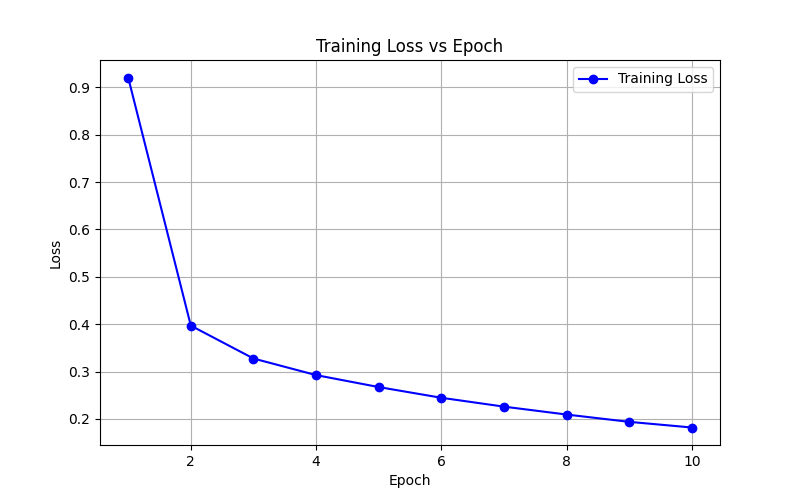
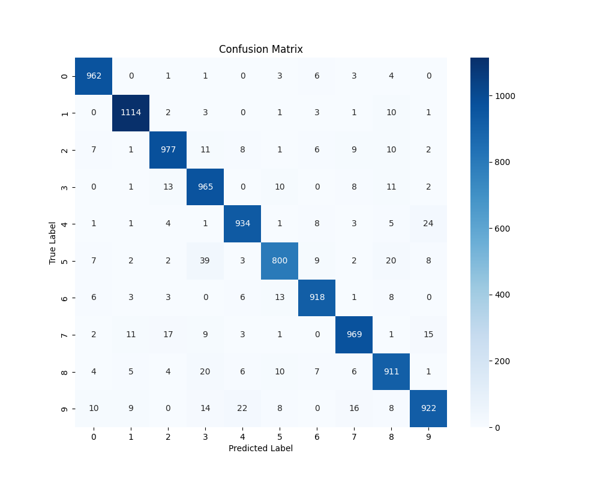
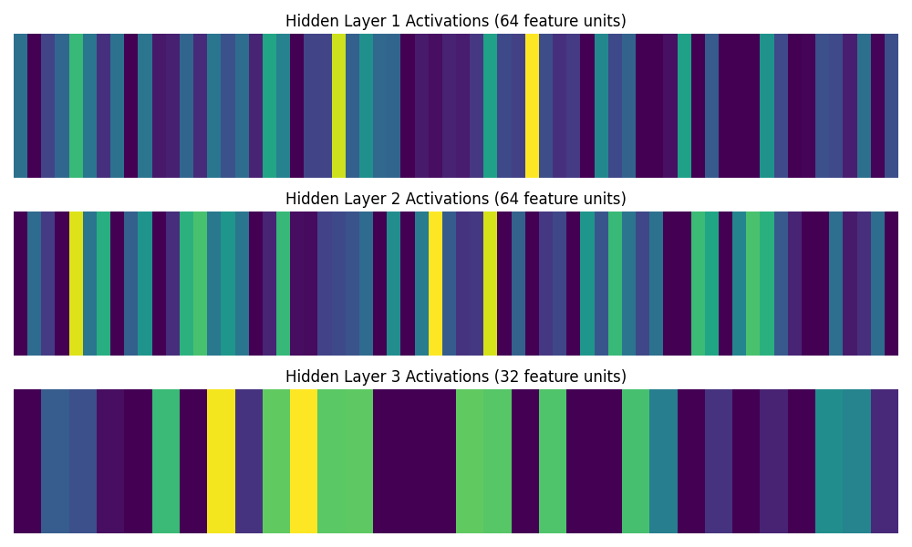

Comprehensive performance and feature analysis of the 3-Layer Artificial Neural Network trained on the 50,000-sample MNIST dataset.

Observe how the cross-entropy loss smoothly decreases over the 10 epochs, showcasing effective learning at a 1e-4 learning rate.

A detailed 10x10 mapping of true vs predicted labels on the test set. The strong grouping along the diagonal signifies very high predictive accuracy across all digits.

Visualizing the internal node activations (post-ReLU) for a single MNIST digit sample passing through the architecture's 64-64-32 dense layers.